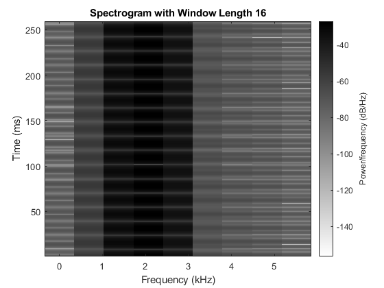

Contents
ECE 6530 Lab P4 (Final Project)
Creator: Thomas Crowne Created: 4/2/2023 uID: u1369330 Description: See p4_README.txt
clear;clc;close all;
4.1a)
Part a was to create beat.m, see lab_p4_README.txt for more info
4.1b)
Create a wave using function beat.m from part a, with the parameters listed below
A = 10; B = 10; fc = 1000; delf = 10; fsamp = 11025; dur = 1; [xx tt] = beat(A,B,fc,delf,fsamp,dur); figure plot(tt,xx); xlim([0 0.2]); title('Test Waveform Beat Function'); xlabel('Time (s)'); ylabel('Magnitude'); % This produces a waveform with a beat frequency (envelope) = 2*delf = 20Hz. The % amplitude is 20. The high-frequency period is 1kHz.
4.2a)
Create a wave using function beat.m from part 4.1a, with the parameters listed below
A = 1; B = 1; fc = 2000; delf = 32; fsamp = 11025; dur = 0.26; [xx tt] = beat(A,B,fc,delf,fsamp,dur);
4.2b)
Create spectrograms of the beat waveform from part 4.2a with two different window lengths, 2048 and 16
figure spectrogram(xx,2048,[],2048,fsamp); colormap(1-gray(256)); title('Spectrogram with Window Length 2048'); % The two frequency components centered around 2kHz are clearly visible in % the spectrogram figure spectrogram(xx,16,[],16,fsamp); colormap(1-gray(256)) title('Spectrogram with Window Length 16'); % The unique frequencies are no longer visually separable as the window length is % too short
4.3)
Create a wave using function mychirp, with the parameters listed below
dur = 3; f1 = 5000; f2 = 300; [xx ~] = mychirp(f1,f2,dur); figure spectrogram(xx,2048,[],2048,fsamp); colormap(1-gray(256)) title('Chirp Spectrogram with Window Length 2048'); % This spectrogram shows the frequency sweeping linearly from 5000Hz to % 300Hz soundsc(xx, fsamp ); % Play the generated chirp signal % Playing this signal produces a tone that starts with a high pitch and % descends to a low pitch, which matches the specification.